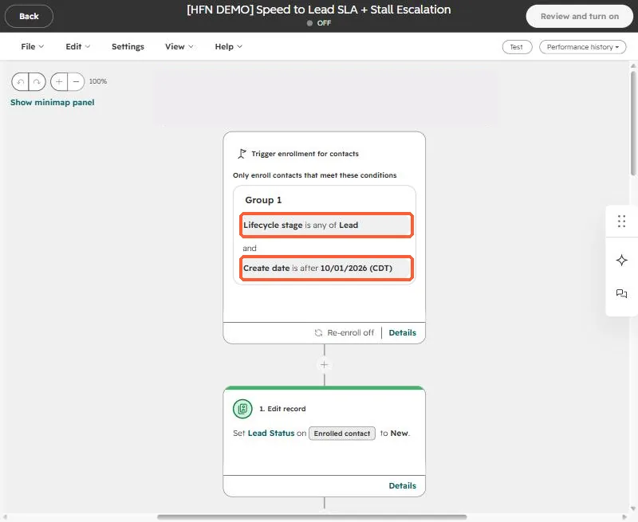
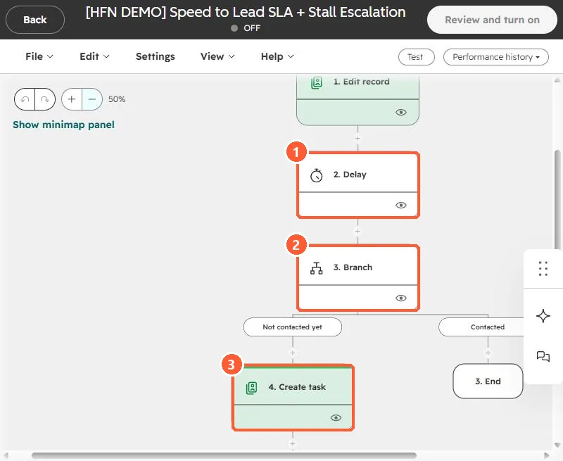
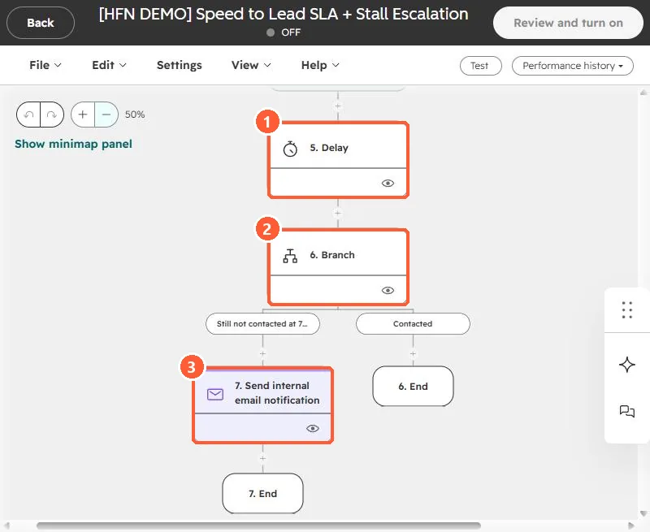

Short answer
Enroll new Leads, set Lead status to New, wait a day, then branch on Last contacted. If it is empty, create a high priority call task for the owner. Wait two more days, check again, and send the owner an internal email if the lead is still untouched. I built this for a home builder, where the same SLA applied to walk-in leads entered by the on-site team as well as online ones.
1. Enroll only new leads
Open Workflows, create a contact-based workflow, and set the trigger to Lifecycle stage is any of Lead, plus a Create date is after filter set to the day you go live. The date filter keeps the workflow from enrolling years of existing leads the moment you turn it on.


With re-enrollment off, each contact gets the SLA once. Turn it on only if a lead that returns should restart the clock. See why records fail to re-enroll.
2. Wait, check, create the task
The first action sets Lead status to New. Then add a one day delay and a branch that asks whether Last contacted is unknown. If it is, the lead has not been touched, so the next action creates a call task, high priority, assigned to the contact owner.


Last contacted is the property HubSpot fills when a sales activity is logged on the contact, so a rep who calls and logs it satisfies the check. Confirm that your team logs activity the way you expect before you rely on it.
3. Escalate if nothing happens
After the task, wait two more days and branch again. The still-not-contacted path sends an internal email to the owner. The contacted path simply ends.


- Send the escalation to the owner first. Add the manager only when you are sure the lead is not contacted.
- Pick one SLA for every lead source. The home builder asked whether walk-ins should be exempt and the answer was no, same rules for everyone, so the funnel numbers stay whole.
- Use a task, not just an email, for the first step so the work shows up in the rep's task queue.